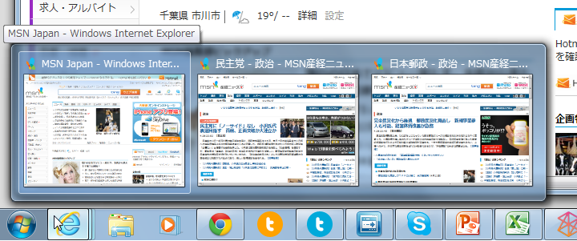
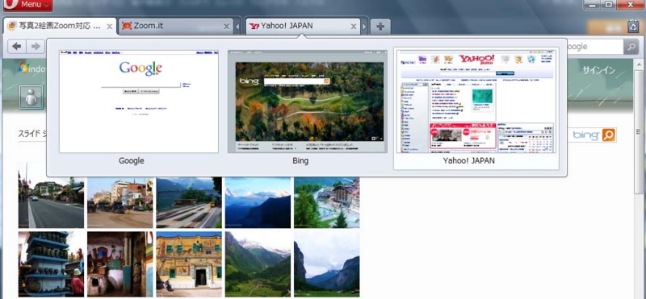
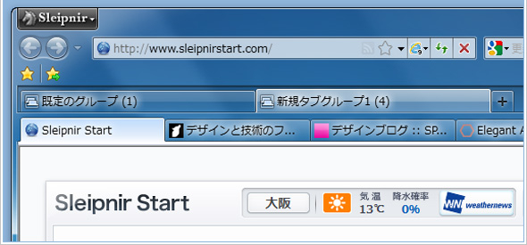
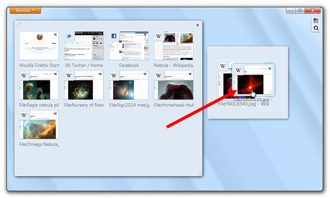

タブは要らない
公開日：
ドキュメントの階層とタブ

ウィンドウにタブなんかいらない。
だって、だいたいの場合、これで十分じゃない？ Windows 7のライブサムネイルのなせるわざだけど。
もちろん例外はある。たとえば、「Visual Studio」なんかはタブがないと怖い。それはなんでかって言うと、VSではウィンドウ＝プロジェクトであり、かつさらに、そのプロジェクトが複数のドキュメント＝タブを管理しているから。管理データの階層が二つ以上あるので、ウィンドウにタブがないと困る。その点、「Internet Explorer」の場合はウィンドウ＝ドキュメントの一階層なので、タブがなくてもやっていける*1というわけ。
ドキュメント階層とタブの有無は関連しているし、すべきだ。
ネストしたタブ



だから、こういうユーザーインターフェイス（ネストしたタブ、タブグループ）にはある種の迷走っぷりを感じる。
あまり必要のないタブがあり、それを管理するためのタブグループがある感じ。そのうち、タブグループを管理するタブが必要になるんじゃないか？ まぁ、こういうアプリは上級者向け*2なんだろうし、Windows Vista以前ではライブサムネイルがないわけだし、そもそも使わないという選択肢もあるので、廃止しろとまでは言わないけど。
ちなみに、「Google Chrome」ではウィンドウ＝タブグループ、ドキュメント＝タブという二階層構成をもち、またそれをちゃんと意識して、早くからウィンドウ間のタブのドラッグ＆ドッキングをサポートしている。「Google Chrome」のウィンドウはタブをグループ化するコンテナなんだ。タブの位置を真似ただけのほかのブラウザーとは違い、デザイン（UXと呼ぶべき？）がよく練られていると改めて思う*3。ただ、これはWindows 7のライブサムネイルを活かした構成ではない。でも、クロスプラットフォームアプリであることを考えれば、批判にはあたらない。Windows環境以外のことも考えれば、これがベストなんだろう。
とにかく、タブは要らない。少なくとも、Windows 7では極力ないほうがスッキリすると思う。SDIの復権バンザイ！
ドキュメントの切り替え
とはいえ、ウィンドウにタブがない＝たぶん［Ctrl］＋［Tab］もない＝同一アプリ内でのドキュメント切り替えが面倒 なのは困る。できれば OS 側で機能をもっておいて（そして、それにみんなが馴染んでいて）ほしいのだけど、猫も杓子もタブインターフェイスのWindows デスクトップでは無理かな。なにか統一的なインターフェイスが用意されていればいいのだけど。
現状、ドキュメントの切り替え機能はアプリが個々に実装するしかない。だったら、［Ctrl］＋［Tab］のメタファとしてのタブはあっていいのかもしれない。タブがある＝［Ctrl］＋［Tab］を使えまっせ！というわけだ。この記事を書き始めたときは「IE9にだってタブは要らないよな」と思ってたけど、［Ctrl］＋［Tab］のことを考えれば、これはこれでバランスのとれたデザインなのかもしれない。
まとめ
- タブを付けるときは、アプリケーションが管理するデータ（ドキュメント）の階層を考えたほうがいいと思う
- ドキュメント階層が1つなら、SDIでいい。複数あるなら、タブインターフェイスを検討すべき
- ドキュメント階層は2つまでがいいんじゃないかなぁ
- ドキュメント切り替え機能は必要だと思う。そのメタファとしてのタブはありかも
目新しいことではないかもしれないけど、せっかくなのでこれを機会に考えてみてもいいと思う。
おまけ
「Microsoft Office」の歴史と、そのユーザーインターフェイスの変態っぷりには敬意を表する (｀･ω･´)ゞ